Overview of Mongolia
Mongolia at a Glance:
• Official Name: Mongolia (Mongol Uls)
• Capital: Ulaanbaatar (population: 1.5 million)
• Area: 1.56 million km² - world's 18th largest country
• Borders: China (south) and Russia (north) - landlocked nation
• Government: Semi-presidential republic
• Currency: Mongolian Tögrög (MNT)
• Climate: Continental with harsh winters and warm summers
• Economy: Mining (copper, gold), agriculture, and tourism
Quick Facts
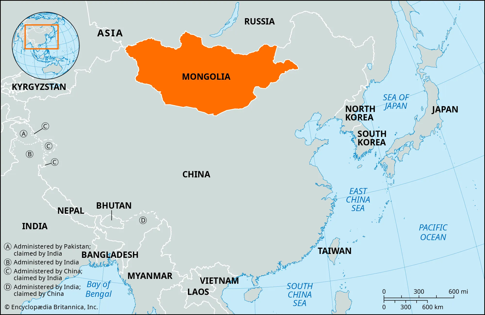
Check-in Activity for Asanha Bucha Holiday
Exploring the Magnificent Gobi Desert:
• Location: Southern Mongolia, one of the world's largest deserts
• Unique features: Cold desert with sand dunes, rocky mountains, and rare wildlife
• Famous inhabitants: Bactrian camels, snow leopards, and Gobi bears
• Fossil discoveries: Rich paleontological site with dinosaur fossils and eggs
• Climate: Extreme temperatures from -40°C in winter to 50°C in summer
• Cultural significance: Ancient Silk Road trade route crossing point

Asian Country - Mongolia
Mongolia is famous for:
• Genghis Khan Equestrian Statue - The world's largest equestrian statue near Ulaanbaatar
• Vast steppes and nomadic lifestyle - Traditional way of life preserved through centuries
• Naadam Festival - Celebrating wrestling, horse racing, and archery
• Traditional food - Buuz (steamed dumplings) and Khuushuur (fried meat pastry)
• Beautiful landscapes - From Gobi Desert to high mountains and grasslands
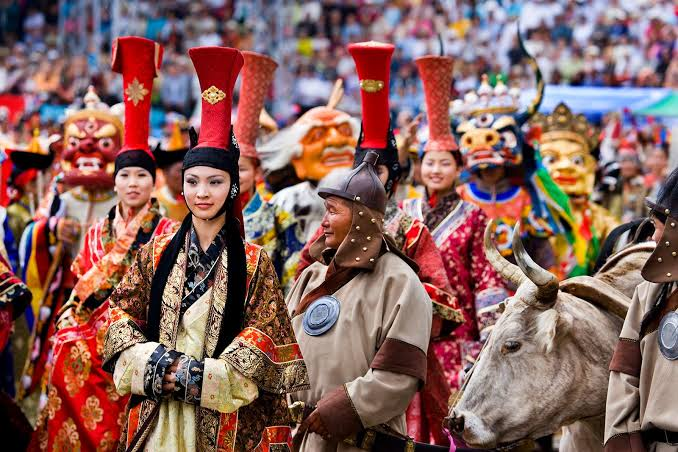
Population
Mongolia Population Facts:
• Population: About 3.4 million people
• Density: One of the most sparsely populated countries
• Life expectancy: Around 70 years
• Ethnicity: 95% Khalkha Mongols, also Kazakhs and smaller groups
• Religion: Tibetan Buddhism, shamanism, and Islam
• Literacy rate: Over 98%
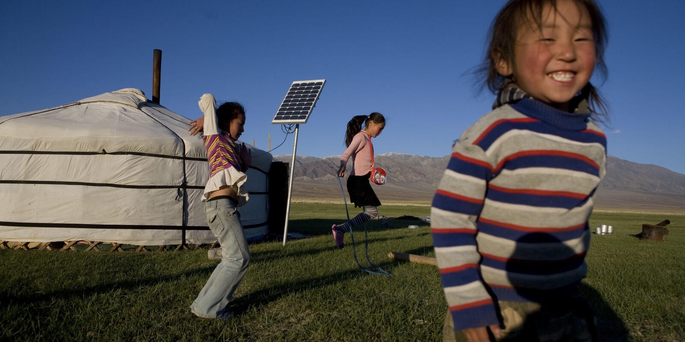
Languages and Dialects
Mongolian Language Background:
• Hello: "Sain baina uu!" (Сайн байна уу)
• Speakers: Over 5 million people
• Standard form: Khalkha Mongolian
• Writing systems: Traditional vertical script and modern Cyrillic alphabet
• Cultural connection: Many words related to horses, nature, and steppe life
• Goodbye: "Bayartai!"
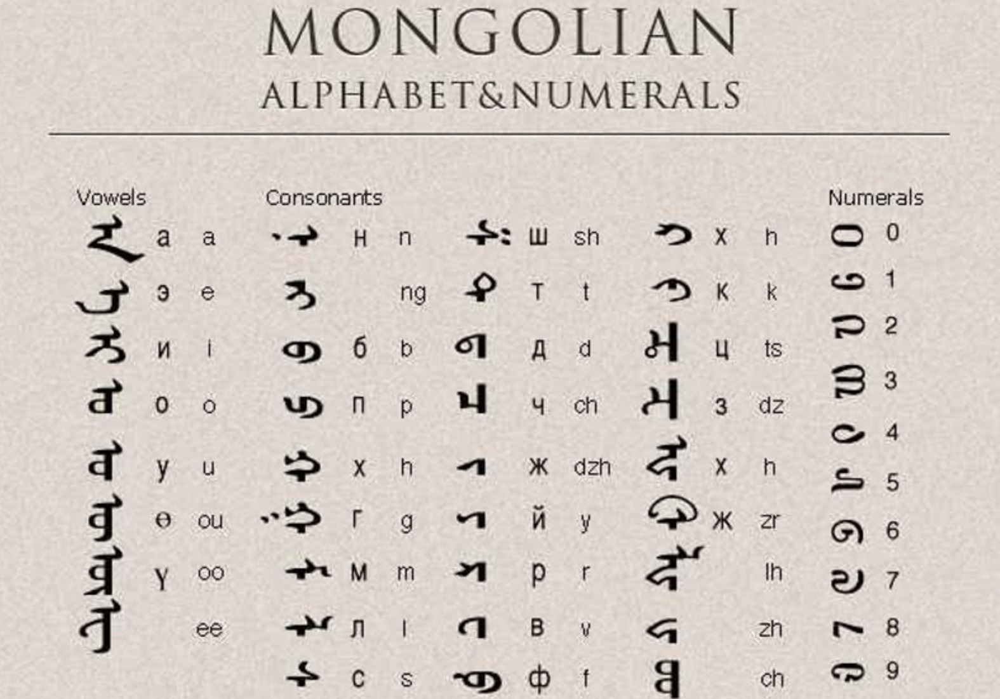
Cultural Festivals
Naadam Festival:
• When: Every July
• The Three Manly Games: Wrestling, horse racing, and archery
• Significance: Symbol of Mongolian pride and tradition
• Tourism: Attracts many international visitors annually
• Cultural importance: Preserves ancient Mongolian warrior traditions
• Location: Celebrated nationwide with main events in Ulaanbaatar
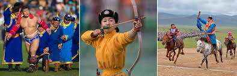
Local Entertainment
Biyelgee - Traditional Folk Dance:
• Performance style: Performed in sitting or half-sitting position
• Origin: Developed inside small gers (traditional homes)
• Storytelling: Hand and arm movements tell stories of herding, hunting, nomadic life
• Costumes: Colorful traditional clothing
• Music: Live music with morin khuur (horsehead fiddle)
• Cultural significance: Living expression of Mongolian identity
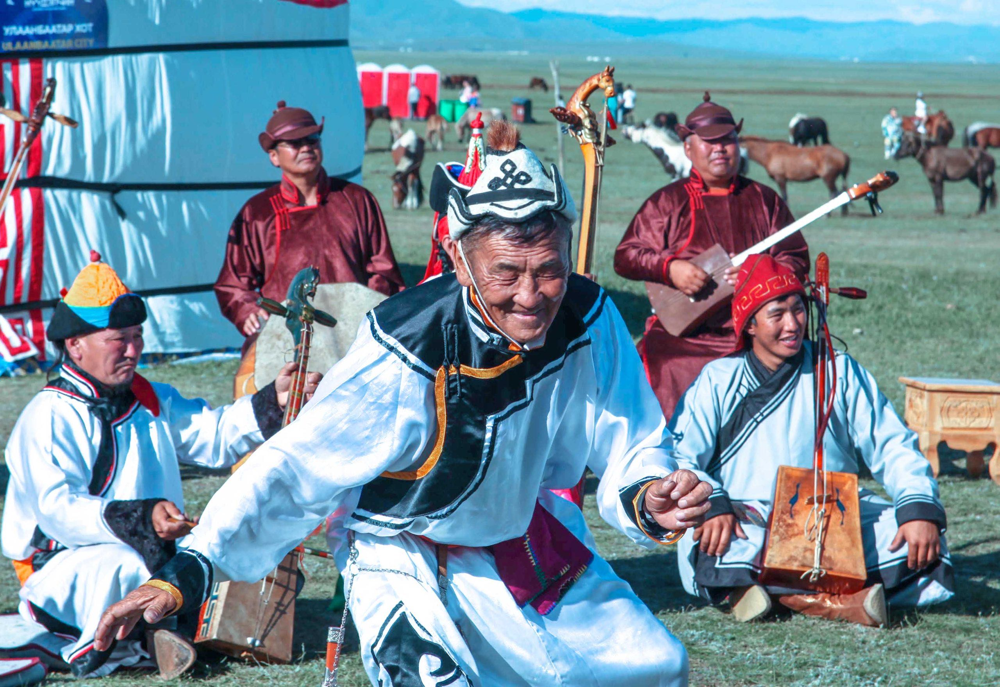
Personality (Midterm)
Personal vs Mongolian Personality:
• INFJ Personality: Introverted, thoughtful, idealistic, prefers meaningful conversations
• Mongolian Personality: Strong, independent, community-oriented, direct communication
• Similarities: Both value helping others and building connections
• Differences: Mongolians are more open/direct, while INFJ is more reserved
• Cultural values: Cooperation, hospitality, resilience from nomadic traditions
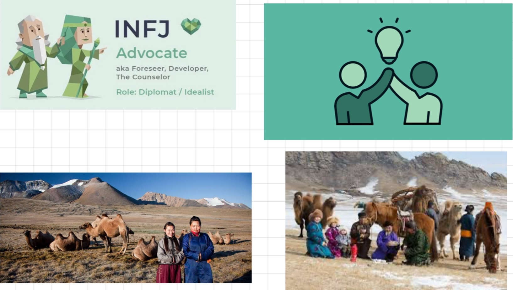
Traditional Sports
Bökh - Mongolian Wrestling:
• Meaning: "Durability" or "firmness"
• Rules: Make opponent touch ground with anything other than feet soles
• Unique features: No weight classes or time limits
• Traditional costume: Zodog (open-chested jacket) and Shuudag (tight shorts)
• Cultural significance: Represents strength, respect, and national identity
• Heritage: Honors Mongolia's nomadic and warrior spirit
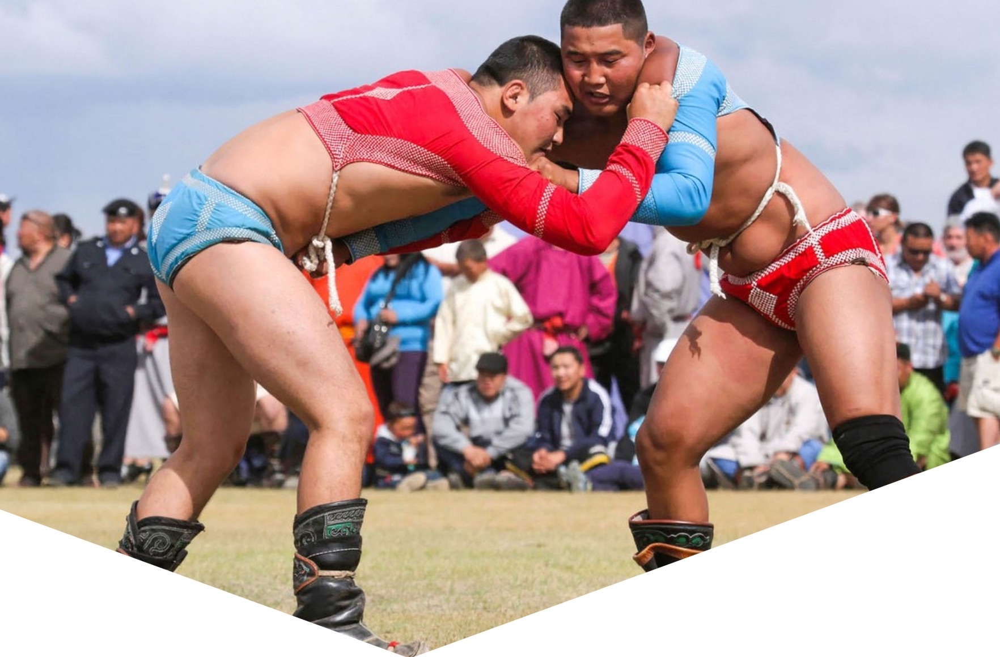
Communication
E-Mongolia App:
• Purpose: Government's official digital service platform
• Services: Apply for ID cards, check tax info, pay fines, request documents
• Convenience: Over 500 public services in one place
• Accessibility: Especially helpful for people in remote areas
• Benefits: Reduces paperwork, saves time, increases transparency
• Usage: Essential tool for modern life in Mongolia
Environment
Environmental Challenges & Solutions:
• Main issue: Air pollution in Ulaanbaatar from coal burning in gers
• Winter problem: City becomes one of world's most polluted
• Government actions: Banned raw coal, promoted processed coal
• Renewable energy: Wind and solar power projects
• Transportation: Programs to improve public transport
• Progress: Slow but steady improvement in environmental protection
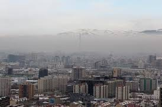
Political Leadership (Final)
Historical & Modern Leaders:
• Chinggis Khaan (1162): United Mongol tribes, created largest land empire
• Leadership qualities: Vision, discipline, military strategy
• Legacy: Connected Asia and Europe, encouraged trade and culture
• Current President: Khürelsükh Ukhna (2021-present)
• Previous role: Prime Minister (2017-2021)
• Modern focus: Economy, renewable energy, democratic system, international relations
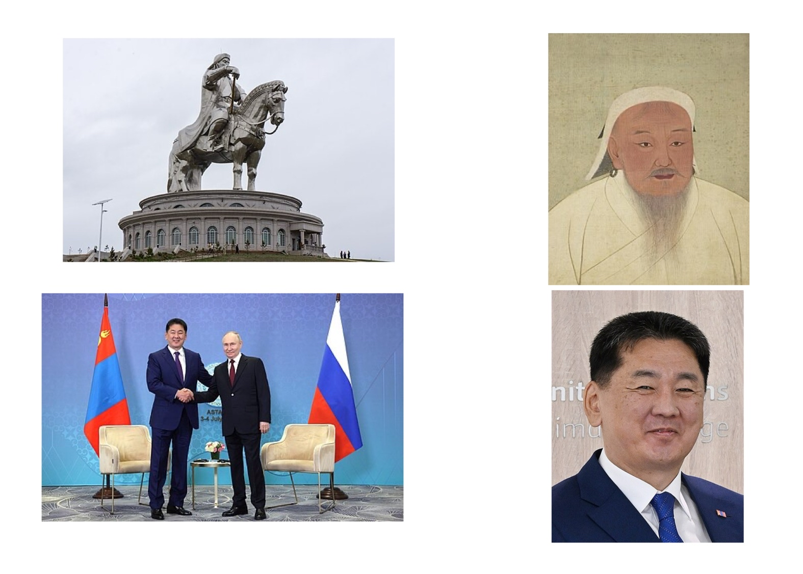
Asian Beauty
Beauty Standards in Mongolia:
• Traditional values: Natural beauty, fair skin, clear features, healthy hair
• Cultural ideals: Strong yet gentle appearance reflecting nomadic lifestyle
• Modern influence: Social media and international trends
• Current preferences: Slim bodies, pale skin, big eyes (East Asian influence)
• Urban trends: Makeup and skincare popularity in cities
• Cultural balance: Traditional deel clothing during festivals maintains heritage
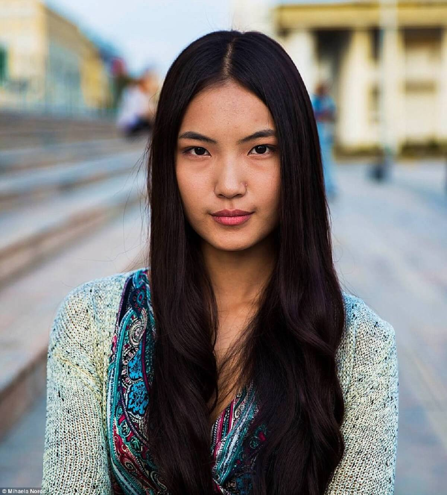
Health and Wellness
Healthy Mongolian Lifestyle:
• Dairy products: Airag (fermented mare's milk) rich in probiotics
• Health benefits: Improves digestion and boosts immune system
• Physical activity: Daily horse riding builds strength and balance
• Traditional sports: Wrestling preserves fitness and cultural identity
• Natural living: Fresh air and outdoor life from nomadic heritage
• Mental wellness: Connection with nature supports well-being
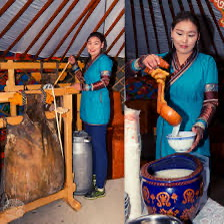